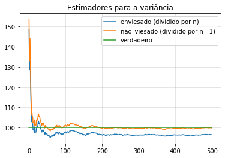

Estimadores não enviesados
Definição
Um estimador é dito não enviesado para se para todo valor de . O viés do estimador é definido por .
Se é um estimador com variância finita, então:
Estimador não enviesado para variância
# Importando bibliotecas
import numpy as np
import pandas as pd
from IPython.display import display, Math # Display latex
import matplotlib.pyplot as plt
%matplotlib inline
np.random.seed(1000) # Garantindo reprodutibilidadeNota: Por que garantir reprodutibilidade?
Reprodutibilidade é a ideia de tornar o processo que foi feito por você reprodutível por qualquer outra pessoa, para que ela possa obter os mesmos resultados seguindo os mesmos passos que você.
Quando escolhemos um número aleatório (pseudoaleatório na verdade), ele muda de tempos em tempos. Mas isso vai tirar a ideia de "garantir os mesmos resultados". O resultado pode ser parecido, mas não exatamente igual.
Isso é muito importante no meio científico.
Exemplo
Vamos ver como se comporta esse estimador não viesado em uma população que representa o Brasil todo! Veja que eu não peguei dados online, porque quero TODA a população. Por isso vamos fazer uma simulação. A média verdadeira da distribuição é 161,1cm e o desvio padrão é 10cm.
# Tamanho da população
N = int(200e5)
# População gerada por simulação, usando a distribuição normal.
population_height = pd.Series(np.random.normal(loc = 161.1, scale = 10, size = N))Podemos ver a média dessa população.
population_height.mean()161.10097546939974
O que a função var do pandas faz? Vamos comparar com o estimador trivial.
ddof = 1 # Se ddof = 0, teremos a divisão por N
population_height.var(ddof = ddof)100.02715920849081
Divindindo por
sigma_square_hat = ((population_height - population_height.mean())**2).sum()/N
sigma1_square_hat = ((population_height - population_height.mean())**2).sum()/(N-1)
display(Math(r'\hat\sigma^2 = {}'.format(sigma_square_hat)))
display(Math(r'\hat\sigma_1^2 = {}'.format(sigma1_square_hat)))
Estimação dos Parâmetros
Vamos supor que não conhecemos os parâmetros da nossa população e podemos conhecer apenas uma amostra aleatória dela. Vamos fazer 500 dessas simulações
number_simulations = 500
sample_size = 30
sample = pd.DataFrame(population_height.sample(n = number_simulations*sample_size,
replace=True, random_state = 100),
columns = ['height'])
reshape = sample.to_numpy().reshape((-1,30))
samples = pd.DataFrame(reshape, columns = range(0,30))Vamos estimar a média com a média amostral que é não viesada também! Além disso ela é o MLE. Estamos estimado para cada amostra a média! Se fizermos uma média das médias, veremos que ela chegará próximo a média verdadeira.
estimated_mean = samples.mean(axis = 1) #Axis = 1 faz a média por linha.
estimated_mean_of_means = estimated_mean.expanding().mean()fig, ax = plt.subplots(figsize = (8,5))
ax.plot(estimated_mean_of_means, label = 'Valor estimado')
ax.hlines(population_height.mean(), xmin = 0, xmax = number_simulations,
color = 'grey', linestyle = '--', alpha = 0.8, label = 'Valor verdadeiro')
ax.grid(alpha = 0.4)
ax.set_title('Estimado a média verdadeira')
plt.show()
Vamos comparar os estimadores para a variância, o viesado e o não viesado.
df = pd.DataFrame({'enviesado (dividido por n)': samples.var(ddof=0, axis = 1).expanding().mean(),
'nao_viesado (dividido por n - 1)': samples.var(ddof=1, axis = 1).expanding().mean(),
'verdadeiro': pd.Series(population_height.var(ddof=0), index=samples.index)})
ax = df.plot()
ax.set_title('Estimadores para a variância')
ax.grid(alpha = 0.4)
plt.show()
# Comparar com Conscistência